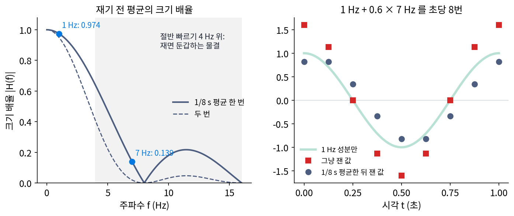

앤티에일리어싱 필터: 재기 전에 빠른 물결을 걷어 낸다
샘플링 정리는 신호에 나이퀴스트 주파수보다 빠른 물결이 없어야 한다는 조건이 붙은 약속이다. 그런데 바퀴살 무늬, 녹음 속 쇳소리, 셔츠의 줄무늬처럼 세상의 신호에는 빠른 물결이 늘 조금씩 섞여 있다. 재 놓고 보니 1 Hz 물결이 생각보다 크다면, 그 가운데 얼마가 원래 1 Hz이고 얼마가 둔갑한 7 Hz인지 샘플에서 가려낼 수 있을까? 가려낼 수 없다면 언제 손을 써야 할까?
1 Hz 에 7 Hz 가 얹힌 신호
x(t) = cos(2π·1t) + 0.6 cos(2π·7t)를 1초에 8번 재 보자. 7 Hz 물결을 초당 8번 재면, 한 번에 315°씩 도는 7 Hz 화살표가 거꾸로 45°씩 도는 화살표와 같은 자리를 지나므로 1 Hz 코사인과 같은 값을 낸다. 샘플은 1.6, 1.131, 0, −1.131, −1.6, …으로 1.6 cos(2π·1t)의 샘플과 똑같다. 1 Hz 물결의 크기가 1이 아니라 1.6인 것처럼 보이고, 샘플에는 0.6이 어디서 왔는지 남아 있지 않다. 재고 나면 늦다.
재기 전에는 7 Hz와 1 Hz가 다른 물결이다. 재기 직전 1/8초 동안의 평균을 재는 값으로 삼는다고 하자. 카메라 센서의 한 칸도 셔터가 열린 동안 들어온 빛을 모두 모으니, 그 동안의 평균을 잰다. 1/8초 동안 1 Hz 물결은 45°만 돌아 평균이 원래 값과 거의 같지만, 7 Hz 물결은 315°를 돌아 양수와 음수가 거의 지워진다. 길이 T 동안의 평균은 주파수 f인 물결의 크기를 sin(πfT)/(πfT)배로 바꾼다. T = 1/8초면 1 Hz는 0.9745배, 7 Hz는 0.1392배다. 샘플에 섞여 드는 7 Hz의 크기가 0.6에서 0.6 × 0.1392 = 0.0835로 준다. 같은 평균을 두 번 거치면 배율이 제곱이 되어 1 Hz는 0.9496배, 7 Hz는 0.0194배, 섞이는 크기는 0.0116이다.

평균은 필터(filter, 어떤 주파수는 남기고 어떤 주파수는 걷어 내는 연산)의 하나다. 신호를 재기 전에 나이퀴스트 주파수 위의 물결을 걷어 내려고 두는 필터를 앤티에일리어싱 필터 (재기 전에 빠른 물결을 걷어 내는 필터 / anti-aliasing filter)라 한다. 가장 좋은 필터는 나이퀴스트 주파수 아래를 그대로 두고 위를 모두 지우는 것이지만, 그런 필터는 펄스 sinc처럼 꼬리가 끝없이 길어 실제로는 근사만 한다. 평균은 단순한 대신 1 Hz도 조금 깎고(0.9745배), 9 Hz(−0.1083배)나 12 Hz(−0.2122배)처럼 남기는 것도 있다. 어떤 필터를 쓸지는 무엇을 얼마나 깎아도 되는지를 보고 고른다.
ML에서: 최대 풀링에 필터를 끼우다
합성곱 신경망은 층을 지나며 그림의 가로세로를 반씩 줄인다. 두 칸에서 큰 값 하나를 고르는 최대 풀링, 한 칸씩 건너뛰며 거는 스트라이드(커널을 옮기는 칸 수) 2 합성곱이 흔하다. 어느 쪽이든 두 칸에 하나만 남기므로, 칸 간격을 두 배로 벌려 다시 재는 샘플링이다. 리처드 장(Richard Zhang)은 2019년 국제 기계학습 학회(ICML)에 낸 「합성곱 신경망을 다시 평행이동 불변으로」에서, 이렇게 줄이는 방법들이 샘플링 정리를 무시한다고 짚었다. 그래서 입력을 조금만 밀어도 출력이 크게 바뀐다. 그는 최대 풀링을 「스트라이드 1로 최댓값 → 흐리게 하는 작은 필터 → 건너뛰기」로 나누어, 줄이기 직전에 필터를 끼웠다. 그 전에도 흐리게 한 뒤 줄이는 방법은 알려져 있었지만 정확도가 떨어진다고 여겨 잘 쓰지 않았는데, 그는 제자리에 끼우면 ImageNet 분류 정확도가 오히려 오른다고 보고했다. 한 칸 밀었을 때 두 방법의 출력이 얼마나 다른지는 아래 문제 9에서 직접 셈한다.
문제 7. 셔터를 오래 열면 바퀴살이 흐려진다
바퀴살 12개, 1초에 1.9바퀴 도는 바퀴를 1초에 24장 찍는다. 한 장을 찍는 동안 셔터가 열려 있는 시간이 (가) 1/1000 초, (나) 1/48 초, (다) 1/24 초(장과 장 사이 내내)일 때, 거꾸로 도는 바퀴살 무늬는 얼마나 또렷하게 찍히는가? 1초에 0.5바퀴 도는 바퀴를 1/24 초 셔터로 찍으면? (위젯 5의 문제 7 단추로 세 셔터를 비교해 보자.)

셔터 시간은 사진이 밝냐 어둡냐의 문제지 바퀴가 도는 방향이랑은 상관없잖아요. 셋 다 똑같이 거꾸로 돌아요.

셔터가 열려 있는 1/24초 동안 바퀴살 무늬는 몇 번 제자리로 돌아오죠?

무늬가 1초에 22.8번이니까 1/24초면 0.95번이요. 한 장 안에 무늬가 거의 한 바퀴를 다 지나가요. 그럼 살이 모든 자리를 다 지나가서 사진에는 잿빛 원판만 남겠네요.

셔터가 열린 동안 빛을 모으는 건 그 시간 동안 평균을 내는 거잖아. 그럼 길이 T 평균의 배율 sin(πfT)/(πfT)을 쓸 수 있겠다.
f에는 무엇을 넣어야 할까요? 바퀴가 도는 1.9일까요?

아니요, 무늬가 바뀌는 22.8이요. 넣으면 1/1000초는 0.999, 1/48초는 0.668, 1/24초는 0.052예요.
1/24초 셔터면 거꾸로 도는 무늬가 원래의 5%로 흐려지네.

그래요. 같은 셔터로 느린 바퀴를 찍으면요?

0.5바퀴면 무늬가 1초에 6번이라 0.900이에요. 느린 바퀴는 거의 또렷하고 빠른 바퀴만 흐려져요. 셔터를 연 시간이 재기 전의 평균 필터였네요.

셔터를 오래 열면 손떨림 때문에 사진이 흐려진다고만 생각했는데, 흐려지는 게 둔갑을 막는 일도 하네요. 빠르게 지나가는 건 흐리게, 천천히 가는 건 또렷하게요.
문제 8. 재고 나서 평균하면
1 Hz + 0.6 × 7 Hz 신호를 1초에 8번 잰 뒤, 이웃한 두 샘플의 평균을 새 샘플로 삼는다. (가) 1 Hz 성분과 7 Hz 성분은 각각 몇 배가 되는가? (나) 재기 전에 1/8초 평균을 낸 경우와 비교하라. (다) 「재기 전에」라는 조건을 빼고 「재고 나서 거르면 된다」고 하면 무엇이 틀리는가?
평균은 평균이니까 똑같이 0.9745배랑 0.1392배요. 순서만 바뀌었잖아요.
잰 뒤의 샘플에서 7 Hz 성분과 1 Hz 성분을 따로 볼 수 있어요?

아, 샘플이 1.6 cos(2π·1t)랑 똑같았죠. 샘플만 보면 7 Hz가 따로 없어요. 그럼 이웃 평균이 두 성분에 하는 일도 같을 수밖에 없네요.
셈해 보면 1/8초 간격의 이웃 평균은 1 Hz 물결의 크기를 cos(π/8) = 0.9239배로 줄여.
7 Hz 성분은요?
샘플에서는 1 Hz와 같으니까… 같은 0.9239배예요. 둔갑해 들어온 0.6도 같이 0.9239배가 될 뿐 원래 1 Hz 성분과 갈라지지 않아요.

재기 전 평균은 1 Hz를 0.9745배, 7 Hz를 0.1392배로 다르게 깎았는데.

그러니 (다)는 어떻게 말할 수 있죠?
재기 전에는 두 성분이 주파수가 달라서 필터가 다르게 대할 수 있는데, 재고 나면 같은 이름을 달아서 어떤 계산도 둘을 다르게 대할 수 없어요. 재고 나서 하는 거르기는 이미 둔갑한 물결 앞에서는 소용이 없어요.

함수를 정의역의 일부에서만 보면 다른 함수와 구별이 안 될 수 있다고 배웠어. 그다음에 무슨 연산을 해도 두 함수는 같은 결과를 내고.
문제 9. 한 칸 밀면 바뀌는 최대 풀링
한 줄짜리 특징 지도 [0, 0, 1, 1, 0, 0, 1, 1, …] (네 칸마다 되풀이, 끝은 처음과 이어진다)를 두 칸씩 묶어 줄인다. 입력을 한 칸 밀어 [1, 0, 0, 1, 1, 0, 0, 1, …] 로도 넣는다. (가) 최대 풀링의 출력과 그 평균은 두 입력에서 각각 얼마인가? (나) 「스트라이드 1로 이웃 두 칸 최댓값 → [1, 4, 6, 4, 1]/16 으로 흐리기 → 한 칸 건너 고르기」의 출력과 평균은? (다) 끝에 출력을 모두 평균해 분류하는 신경망이라면 어느 쪽이 밀기에 덜 흔들리는가?
짜 봤어요. 최대 풀링은 밀기 전에 [0, 1, 0, 1, …], 민 뒤에 [1, 1, 1, 1, …]이에요. 평균이 0.5에서 1.0으로 두 배가 됐어요. 입력은 같은 무늬를 한 칸 민 것뿐인데요.
0, 0, 1, 1 무늬는 칸당 몇 번 출렁이죠? 두 칸씩 묶은 뒤에는요?
네 칸에 한 번이니까 칸당 1/4번이에요. 두 칸을 한 칸으로 묶으면 새 칸당 1/2번, 새 칸의 나이퀴스트 주파수와 같네요.
나이퀴스트 주파수와 같으면… 문제 4(하루에 두 번 재는 기온)랑 같은 처지야.
아, 그럼 어디서 재느냐에 따라 출렁임이 다 보이기도 하고 하나도 안 보이기도 해요.
(나)는 밀기 전 [0.625, 0.875, 0.625, 0.875, …], 민 뒤 [0.75, 0.75, …]야. 평균은 둘 다 0.75로 같아. 출렁임의 크기도 0.25로 줄었고.
출렁임이 아예 없어지진 않았네요. 흐리기를 [1, 4, 6, 4, 1]로 해도 나이퀴스트 주파수의 물결이 0이 되지는 않거든요. 그래도 (다)는요?
끝에서 평균을 내면 출렁임은 지워지고 평균만 남겠죠.
그럼 두 방법의 평균을 나란히 놓아 볼래요?
최대 풀링은 그 평균 자체가 0.5에서 1.0으로 바뀌고, 필터를 끼운 쪽은 평균이 두 입력 모두 0.75예요. 분류 점수가 한 칸 밀기에 흔들리지 않게 되는 거네요.
문제 7(셔터를 오래 열면 바퀴살이 흐려진다)이랑 같네요. 최댓값을 고르는 건 셔터를 아주 짧게 연 거고, 흐리게 하는 게 셔터를 길게 연 거예요.